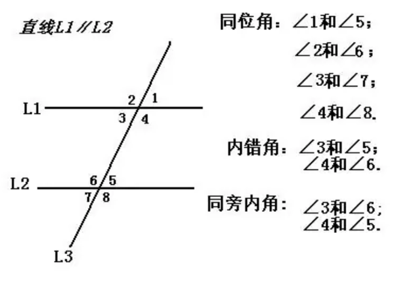

《相交线》
- 有一条公共边，且它们的另一边互为反向延长线的两个角，互为邻补角；
- 有一个公共顶点，且一个角的两边是另一个的反向延长线的两个角，互为对顶角；
- 邻补角互为补角，对顶角相等；
- 两条相交直线，所成的角中，如果有一个直角的话，就称两条直线互相垂直，一条直线叫做另一条的垂线；记作AB⊥CD，垂足为O；
- 同一平面内，过一点有且仅有一条直线与已知直线垂直；点与垂足组成的线段叫垂线段；点到垂线之间的距离垂线段最短；垂线段的长度叫做点直线的距离；
-
三线八角图，一条直线与另外两条直线相交组成的图形，也叫一条直线被另外两条直线所截构成的角；同位角，两个角在两条直线的同侧，在第三条直线的同旁；内错角，两个角都在两条直线的内部，在第三条直线的两侧；同旁内角，两个角都在两条直线的内部，在第三条直线的同侧；

- 平面内两条不相交的直线，称为平行线；直线AB平行于直线CD,表示为AB//CD；
- 平行公理，经过直线外一点，有且只有一条直线与已知直线平行；推论，如果有两条直线同时与第三条直线平行，那么这两条直线也互相平行，表示为a//b，b//c，则a//c；
- 平面内，两条直线被第三条直线所截，同位角相等或者内错角相等的情况下，两条直线平行；同旁内角互补的情况下，两直线平行；如果两条直线都垂直于一条直线，则两条直线平行；
- 两条直线平行，同位角、内错角相等，同旁内角相等；
- 命题，判断一件事情的语句；命题分条件和结论，条件也叫做题设；一般写成如果。。。那么。。。；
- 如果题设成立，结论就成立，叫做真命题；
- 如果题设成立，结论就不成立，叫做假命题；
- 通过推理论证证明真命题是正确的，叫做定理，这个过程叫做证明；
- 把一个图形整体延一条直线方向移动一定的距离，叫做平移；平移前后两个图形，形状和大小完全相等；平移前后对应点所连线段平行且相等，或在一条直线上；